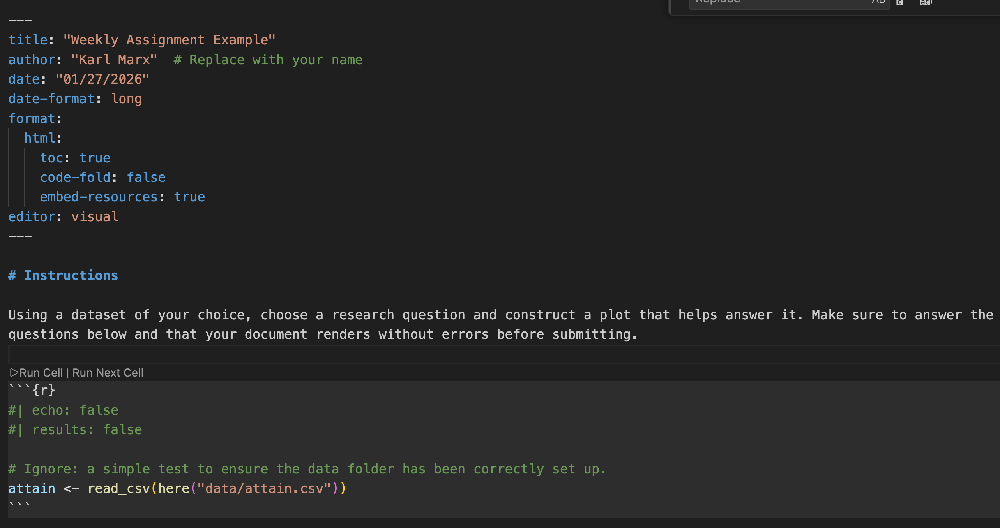
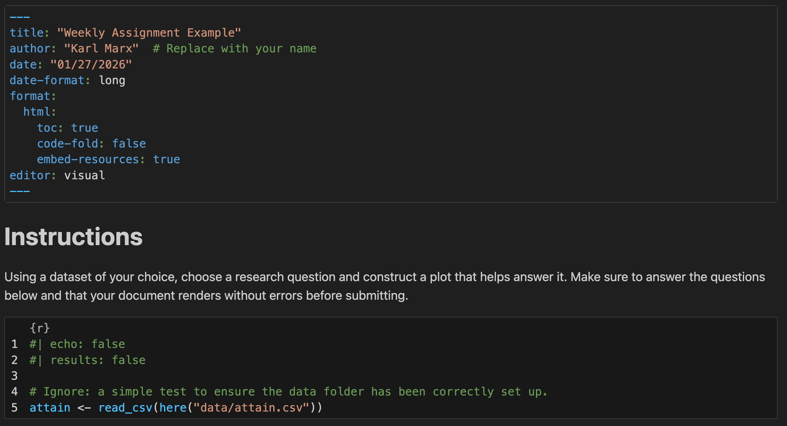

[1] 13[1] 30Sociology 106: Quantitative Sociological Methods
January 27, 2026
Office hours this week
HW #1: due Thursday, February 5 by 11:59 PM
Tidyverse is and how it differs from base R.qmd filesPositron is an Integrated Development Environment (IDE)—essentially a wrapper to make working with a particular software more user-friendly.
An IDE provides:
About Positron:
Learn more: Andrew Heiss’ blog

Let’s explore Positron together on your laptop:
Quarto (.qmd) files let you combine code, output, and written analysis in one document. Check out Quarto’s website for more!
Why I want you to use them for homework:
.qmd FileA .qmd file has three main parts and knits code + text together (unlike .R which runs code only):
2. Markdown Text (narrative)
Use **bold**, *italics*, # Headings to organize your script and write analyses in between code.
3. Code Chunks (analysis)
Insert R (or python) code directly in your analyses.
What is Rendering?
Rendering (or “knitting”) converts your .qmd file into a finished document (HTML, PDF, or Word) by:
How to Render
Source vs Visual Mode
Positron provides two ways to edit .qmd files. Toggle between them using the buttons at the top-left of your editor.
Source, which is the source actual code:
**bold**, ## Heading
Visual, which looks a lot like jupyter notebooks and allows you to edit code and text in a more interactive manner:

Which Should You Use?
Switch between them! Use Visual for writing, Source for troubleshooting. Just be sure to save when switching in between
Tips for making it work
Most common “knitting” errors:
Should be fine if you don’t do anything fancy and don’t mess with quarto settings
Set up your folder:
hw0.qmd, attain.csv, and _quarto.yml from bCourse under “assignment” > “HW #0”soc106 folder on your desktopdata and assignments folders insidesoc106/
├── _quarto.yml
├── data/
│ └── attain.csv
└── assignments/
└── hw0.qmdOpen in Positron:
Open Folder → navigate to soc106Explorer button on left to find hw0.qmdEdit and render:
Run CellRender on Save.qmd and .html to bCoursesscript.RBest practice to write all code in a script file
Two types of files we’ll work with
.R): accept R code and are very similar to text files except that they read R code..qmd): allow to intersperse R/Python (other languages too!) with text. It’s great for putting text next to analysis.script.RUse a hashtag (#) at the start of lines in your script to tell R not to run that line
Check out this example:
script.RR is an object-oriented programming language, meaning you can create new objects from any type of value, store it R’s memory, and call it when necessary
<-| Type | Description | Examples |
|---|---|---|
| Numeric | Real numbers; supports math operations (+, -, *, /) |
3, 4.5, 8.98443 |
| Character | Text; always in quotation marks | "Welcome!", "foo" |
| Boolean | Logical values; R stores as 1 (TRUE) or 0 (FALSE) |
TRUE, FALSE |
Data structures are simply collections of the data objects we have been working with:
While there are many types of data structures in R, we will focus on two for our purposes: the vector and the dataframe
Vectors are ordered collections of the same type of objects
We create vectors using the c() operator:
The c() operator works on already-existing vectors as well as variables (if of same type)
Use bracket notation to access individual elements: vector[i]
A dataframe is a list of equal-length vectors. We’ll focus on tidy dataframes, which organize data so that:
# A tibble: 3 × 4
Observation name age enrolled
<chr> <chr> <dbl> <lgl>
1 Obs1 Alice 22 TRUE
2 Obs2 Bob 25 TRUE
3 Obs3 Charlie 19 FALSE glimpse(): view data and summary info of dataframehead(): looks at first few observations (similar to print())str(): returns structure of dataframecolnames(): returns column nameshere packageTo load data, R needs to know where to look—but file paths break across different computers/operating systems.
The here package solves this by building paths relative to your project root (home folder of the project).
library(here)
# here() finds your project root and builds paths from there
here() # check where here thinks your project root is
# Loading data
#data <- read_csv("~/Desktop/project/data/raw/mydata.csv")
data <- read_csv(here("data", "raw", "mydata.csv"))
# Saving data
write_csv(results, here("output", "results.csv"))TidyverseWhat is it?
Core Packages we’ll be using
TidyverseKey Features
|>:1 chains functions together for readable codeTidyverseHow the packages work together
| Tidyverse Function | Purpose | Example |
|---|---|---|
read_csv() |
Import CSV data | read_csv("data.csv") |
glimpse() |
Preview dataframe structure | df |> glimpse() |
colnames() |
Get column names | colnames(df) |
select() |
Choose columns | df |> select(name, age) |
filter() |
Choose rows by condition | df |> filter(age > 20) |
slice() |
Choose rows by position | slice(df, 1:10) |
arrange() |
Sort rows | arrange(df, desc(age)) |
mutate() |
Create/modify columns | df |> mutate(age_2x = age * 2) |
rename() |
Rename columns | df |> rename(new = old) |
Let’s practice using the folder structure you already set up:
lab1.qmd from bCourse under “labs” > “Lab #1”labs folder inside your soc106 folderlab1.qmd in the labs folder. Your folder structure should now look like this:soc106/
├── _quarto.yml
├── data/
│ └── attain.csv
├── assignments/
│ └── hw0.qmd
└── labs/
└── lab1.qmdUse the Explorer button on the left to find and open lab1.qmd
Let’s work through it together!
For this week only, I will provide a dataset for you to use on your homework assignment
Turn in your assignment on bCourses
hw1.qmd and hw1.html filesYou can also load Excel files into R
First, load the readxl package:
Then, use the read_excel function:
In fact, R can import all types of data files
Googling “import SAS/STATA/SPSS files into R” will point you in the right direction
?[function_name] brings up a help page??[function_name] will (sometimes) lead to helpful examples of how to use the functionls() lists all objects in the global environmentrm(object_name) removes an objectrm(list=ls()) removes all objectsLecture and lab are based on the first two RFundamentals classes, which are run at the D-Lab
.R vs .qmd FilesSo to summarize .R and .qmd scripts:
| Feature | .R Script |
.qmd Document |
|---|---|---|
| Purpose | Run code | Create reports |
| Content | Code only | Code + text + output |
| Output | Console results | Formatted document (e.g., HTML/PDF/Word) |
| Comments | # comment |
Full markdown formatting |
| Best for | Data cleaning, functions | Analysis reports, presentations, hw |
Output Formats
For this course, make sure html is specified in your YAML header:
Can format many different formats (e.g., pdf, docx, odt, epubs, pptx)